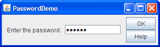

Lección: Usando Componentes Swing
Sección: Cómo Usar Varios Componentes
Cómo Usar Campos de Contraseña
La clase
JPasswordField, una subclase de JTextField, ofre campos de texto especializado
para ingresar la contraseña. Por razones de seguridad, un campo de texto no muestra los caracteres que el
usuario teclea. En vez de eso, el campo visualiza un caracter diferente del que se tecleó, tal como un
asterisco, '*'. Como otra medida de seguridad, un campo de texto almacena su valor como una matriz
de caracteres, en vez de en una cadena. Como un campo de texto ordinario, un
campo de contraseña dispara un
evento de acción cuando el
usuario indica que la entrada de texto está completa, por ejemplo presionando el botón Intro.
Aquí hay una imagen de una demostración que abre una pequeña ventana y le pide al usuario que ingrese una contraseña.

Pulse el botón Lanzar para ejecutar PassworDemo usando Java™ Web Start (descargue KDJ 7 o posterior). Alternativamente, para compilar y ejecutar el ejemplo usted mismo, consulte el índice de ejemplos.
La contraseña es "bugaboo". La contraseña "bugaboo" es sólo un ejemplo. Use métodos de
autenticación seguros en sistemas de producción. Puede encontrar el código entero para este programa en
PasswordDemo.java. Aquí está el código que crea y configura el campo
de contraseña:
passwordField = new JPasswordField(10);
passwordField.setActionCommand(OK);
passwordField.addActionListener(this);
El argumento pasado en el constructor de JPasswordField indica el tamaño preferido del campo, el
cual es al menos de 10 columnas de ancho en este caso. Por defecto un campo de contraseña visualiza un punto por
cada carácter tecleado. Si quiere cambiar el carácter de echo, llame al método setEchoChar. El
código entonces añade un oyente de acción al campo de texto, el cual comprueba el valor tecleado por el usuario.
Aquí tiene la implementación del método actionPerformed del oyente de acción:
public void actionPerformed(ActionEvent e) {
String cmd = e.getActionCommand();
if (OK.equals(cmd)) { //Procesa la contraseña.
char[] input = passwordField.getPassword();
if (isPasswordCorrect(input)) {
JOptionPane.showMessageDialog(controllingFrame,
"¡Éxito! Escribió la contraseña correcta.");
} else {
JOptionPane.showMessageDialog(controllingFrame,
"Contraseña inválida. Inténtelo de nuevo.",
"Mensaje de error",
JOptionPane.ERROR_MESSAGE);
}
//Pone a ceros la posible contraseña, por seguridad.
Arrays.fill(input, '0');
passwordField.selectAll();
resetFocus();
} else ...//maneja el botón de Ayuda...
}
Nota de seguridad: Para mejorar aun más la seguridad, una vez terminó con la matriz de caracteres devuelta por el método
getPassword, debería fijar cada uno de sus elementos a cero. El trozo de código precedente le
muestra como hacer esto.
Un programa que usa un campo de contraseña típicamente valida la contraseña antes de completar cualquier acción
que requiera la contraseña. Este programa llama a un método privado, isPasswordCorrect, que compàra
el valor devuelto por el método getPassword con un valor almacenado en una matriz de caracteres.
Aquí está el código:
private static boolean isPasswordCorrect(char[] input) {
boolean isCorrect = true;
char[] correctPassword = { 'b', 'u', 'g', 'a', 'b', 'o', 'o' };
if (input.length != correctPassword.length) {
isCorrect = false;
} else {
isCorrect = Arrays.equals (input, correctPassword);
}
//Pone a ceros la contraseña.
Arrays.fill(correctPassword,'0');
return isCorrect;
}
La IPA del Campo de Contraseña
Las siguientes tablas listan los constructores y métodos comunmente usados de JPasswordField. Para
más información sobre la IPA que los campos de contrasela heradan, vea
Cómo Usar Campos de Texto.
| Constructor o Método | Propósito |
|---|---|
|
JPasswordField()
JPasswordField(String) JPasswordField(String, int) JPasswordField(int) JPasswordField(Document, String, int) |
Crea un campo de contraseña. Cuando está presente, el argumento int especifica el ancho
deseado en columnas. El argumento String contiene el texto inicial del campo. El argumento
Document ofrece un modelo personalizado para el campo.
|
| char[] getPassword() | Devuelve la contraseña como una matriz de caracteres. |
|
void setEchoChar(char)
char getEchoChar() |
Establece u obtiene el carácter de eco que se muestra en lugar de los caracteres reales escritos por el usuario. |
|
void addActionListener(ActionListener)
void removeActionListener(ActionListener) (defined in JTextField)
|
Añade o elimina un oyente de acción. |
|
void selectAll()
(defined in JTextComponent)
|
Selecciona todos los caracteres en el campo de contraseña. |
Ejemplos que Usan Campos de Contraseña
PasswordDemo es el único ejemplo del Tutorial que
usa un objeto JPasswordField. Sin embargo, el Tutorial tiene muchos ejemplos que usan objetos
JTextField, cuya IPA es heredada por JPasswordField. Vea
Ejemplos Que Usan Campos de Texto para mayor información.
Si está programando en JavaFX, vea Campos de Contraseña.